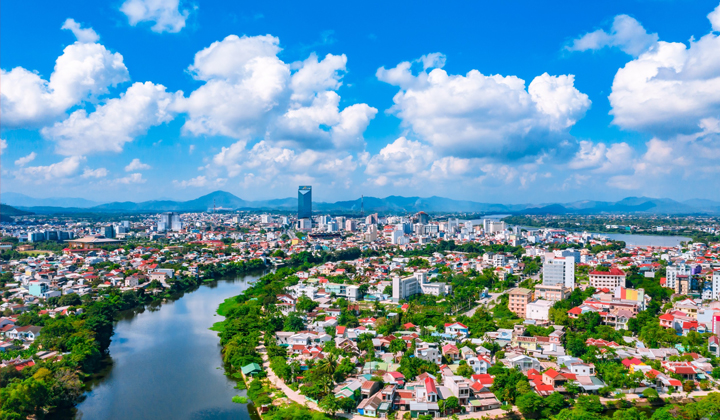
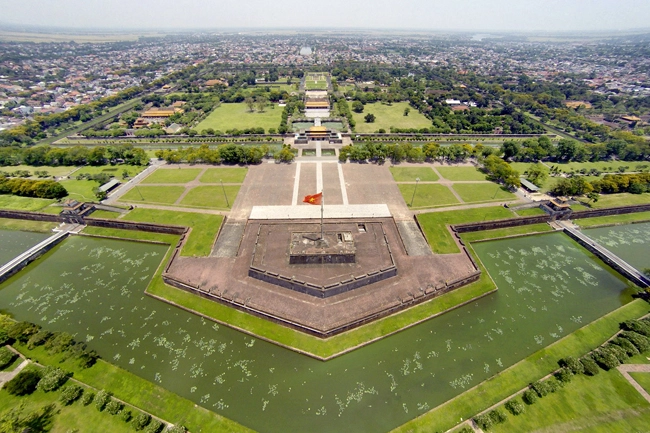
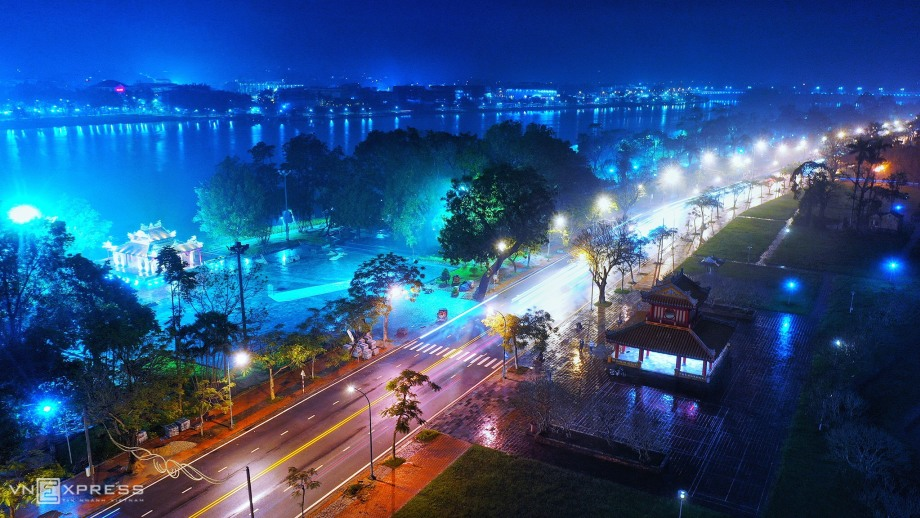
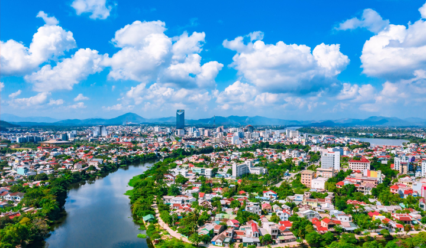
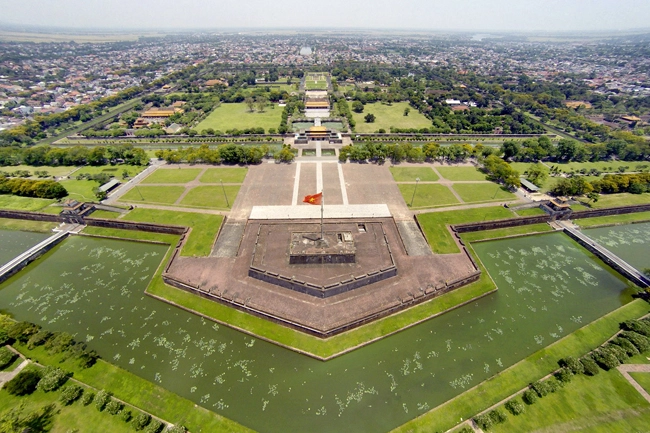
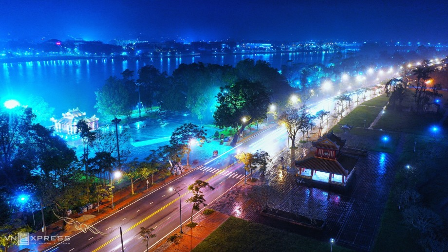

Văn hóa/Lịch sử
Ẩm thực: Nơi đây có nền ẩm thực luôn khiến cho người ta nhớ mãi nhờ hương vị và cách chế biến độc đáo, mang đậm nét tinh hoa văn hóa dân tộc. Khác với những vùng miền khác, đặc sản Huế có vị đậm đà, vị cay nồng của người miền Trung nhưng lại có sự hấp dẫn đến lạ, tiêu biểu là món: Cơm hến, bún bò Huế, bánh nậm, ...
Công trình, kiến trúc: Thừa Thiên Huế là một điểm đến lịch sử và văn hóa quan trọng của Việt Nam, với nhiều công trình và kiến trúc đặc sắc, đặc biệt là trong thời kỳ đế quốc Nguyễn. Trong số đó có thể kể đến là: Chùa Thiên Mụ, viện bảo tàng Cổ vật Cung đình Huế, ...
Văn hóa Văn hóa Huế có sự tác động của văn hóa Đông Sơn cùng văn hóa Sa Huỳnh tạo nên nền văn hóa Việt - Chăm. Nền văn hóa được tạo nên bởi sự đặc sắc về tinh thần, đa dạng các loại hình, phong phú và độc đáo về nội dung, tất cả những điều ấy được thể hiện trên nhiều lĩnh vực như: văn học, âm nhạc, sân khấu, mỹ thuật, phong tục tập quán, lễ hội, lề lối ứng xử, ăn - mặc - ở, phong cách giao tiếp, phong cách sống, ...
 




